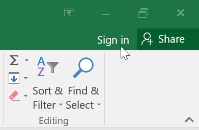
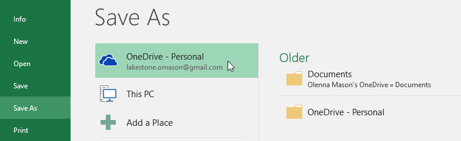

/en/excel/getting-started-with-excel/content/
Nhiều tính năng trong Microsoft Office hướng đến việc lưu và chia sẻ tệp trực tuyến.OneDrivelà dung lượng lưu trữ trực tuyến của Microsoft mà bạn có thể sử dụng để lưu, chỉnh sửa và chia sẻ tài liệu cũng như các tệp khác của mình. Bạn có thể truy cập OneDrive từ máy tính, điện thoại thông minh hoặc bất kỳ thiết bị nào bạn sử dụng.
Để bắt đầu với OneDrive, tất cả những gì bạn cần làm là thiết lập mộttài khoản Microsoftmiễn phí nếu bạn chưa có tài khoản.
Nếu chưa có tài khoản Microsoft, bạn có thể xem bài học Tạo tài khoản Microsoft trong phần hướng dẫn về Tài khoản Microsoft của chúng tôi.
Sau khi có tài khoản Microsoft, bạn sẽ có thể đăng nhập vào Office. Chỉ cần nhấp vàoĐăng nhậpở góc trên bên phải của cửa sổ Excel.

Sau khi bạn đăng nhập vào tài khoản Microsoft của mình, có một số điều bạn có thể thực hiện với OneDrive:
Khi bạn đăng nhập vào tài khoản Microsoft của mình, OneDrive sẽ xuất hiện dưới dạng tùy chọn bất cứ khi nào bạn lưu hoặc mở tệp. Bạn vẫn có tùy chọn lưu tập tin vào máy tính của mình. Tuy nhiên, việc lưu tệp vào OneDrive cho phép bạn truy cập chúng từ bất kỳ máy tính nào khác và nó cũng cho phép bạn chia sẻ tệp với bạn bè và đồng nghiệp.
Ví dụ: khi bạn bấm vàoLưu dưới dạng, bạn có thể chọn OneDrive hoặc PC này làm vị trí lưu.

/en/excel/tạo-và-mở-workbooks/nội dung/